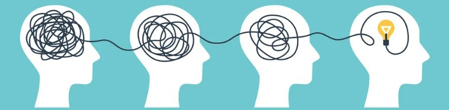

Overview
There is no single perfect way to learn.
What matters is how your brain takes in, stores, and uses information.
Be active
Test yourself and explain ideas out loud. Psychologists call this
retrieval practice — studies show it produces stronger
long-term memory than re-reading.
Learn more ↗
Give it time
Short sessions spread across days work best. This is known as
spaced repetition — first studied by Hermann Ebbinghaus in 1885
and backed by decades of research since.
Learn more ↗
Make connections
Link new ideas to what you already know by asking yourself "why does this make sense?"
Psychologists call this elaborative interrogation.
Learn more ↗
Teach it out loud
Explaining a topic to someone else — or even to yourself — forces you to
organise your thinking and spot gaps. This is known as the Protégé Effect.
Learn more ↗

The aim: remember and use what you learn.